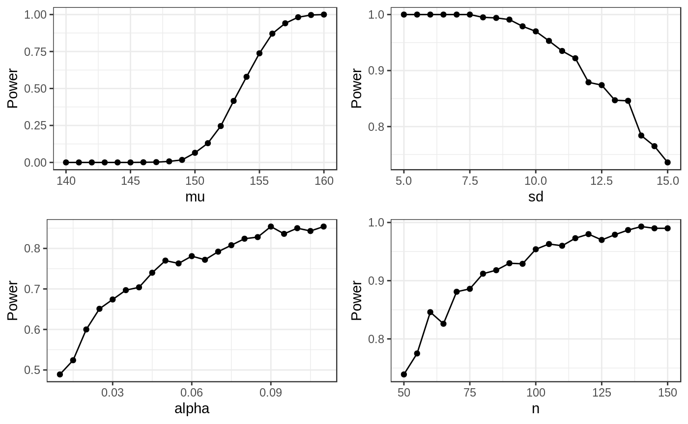

The code in this package is stored in the ‘meerkat’ package. It contains helper functions that are not exported and for which no visible documentation was written. At the start of each part, I give a link to the R-code hosted on GitHub where you can view the code.
1. Assuming that the data are approximately normal, simulate one sample of data and perform a t-test using the R in-built t-test function. What is the p-value of the test? What is your conclusion?.
rm(list=ls())
library(meerkat)
# Set values and draw a sample
n <- 50
mu <- 160
sd <- 15
set.seed(600)
exp <- rnorm(n, mu, sd)
# We perform a t-test on the data
t.test(exp, alternative="greater", mu = 150)##
## One Sample t-test
##
## data: exp
## t = 5.0672, df = 49, p-value = 3.07e-06
## alternative hypothesis: true mean is greater than 150
## 95 percent confidence interval:
## 157.1167 Inf
## sample estimates:
## mean of x
## 160.6356The one-tailed test is statistically significant (p<0.0001). At a significance level of a=0.05 we would therefore reject the null that there is no difference in the test scores of these groups. The experimental group , it would seem, performed better than the control and the special training has had the desired effect.
2. Assume that the data are normally distributed, write a function that generates data and performs a t-test 1000 times and that stores the values of the t-statistic (or the p-value) in a vector. Thinking about the definition of power in terms of rejecting the null hypothesis, how would you obtain an estimate of the power in this situation? Compare your results with those given by power.t.test
Power is defined as the probability \(\pi(\theta)\) of rejecting the null hypothesis given that the alternative hypothesis is true.1. The probability of making a Type II error (wrongfully concluding that there is no effect while an effect exists) is \(1-\pi(\theta))\). A common maximum value for the Type II error is that we should not commit it in more than 20% of cases. Hence, the ‘minimum’ power we should strive for is \(0.8\), meaning that we can detect effects \(4\) out of \(5\) times.
The function emp_power() calculates, for a given \(R\) number of repititions, the t-statistic between the mean value of the control group and that of a random sample drawn from the normal distribution. Given that we are interested in the probability \(\pi(\theta)\), one reasonable approach is to take the proportion of cases where the null hypothesis is rejected and the p-value of the t-test is lower than the significance level \(\alpha\).
Given that we draw data from a normal distribution and for values where \(\theta_0 < \theta_1\), we may be confident that the power of our test increases as we:
The effect of changing these values is shown in the plots below
library(ggplot2)
library(grid)
library(gridExtra)
# Define a grid of possible mean values from 140 to 160
grids <- list(
grid_mu = seq(140, 160, 1),
grid_sd = seq(5, 15, 0.5),
grid_alpha = seq(0.01, 0.11, 0.005),
grid_n = seq(50, 150, 5)
)
grids_out <- vector("list", length = 4)
# For each value, calculate the power od the t-test while holding the other parameters constant
for( i in seq_along(grids) ) {
# Get name
grids_in_name <- names(grids)[i]
grid <- grids[[i]]
# This switch is a wrapper for a bunch of if/else statements
power_values <- switch(grids_in_name,
grid_mu = lapply(grid, function(x) emp_power(150, 50, x, 15,
alpha=0.05, alternative="greater")),
grid_n = lapply(grid, function(x) emp_power(150, x, 155, 15,
alpha=0.05, alternative="greater")),
grid_sd = lapply(grid, function(x) emp_power(150, 50, 155, x,
alpha=0.05, alternative="greater")),
grid_alpha = lapply(grid, function(x) emp_power(150, 50, 155, 15,
alpha=x, alternative="greater"))
)
# Get values
pv <- sapply(power_values, function(x) x$power)
# In data frame
df <- data.frame("grid" = grid,
"power" = pv)
# Plot
grids_out[[i]] <- ggplot(df, aes(x=grid, y=power)) +
geom_line() +
geom_point() +
theme_bw() +
scale_x_continuous(name = strsplit(grids_in_name, "_")[[1]][2]) +
scale_y_continuous(name = "Power")
}
# Plot
grid.arrange(grids_out[[1]], grids_out[[2]],
grids_out[[3]], grids_out[[4]], ncol=2, nrow=2)
If we compare the results from the empirical test to the R function, we observe:
power.t.test(n=50, delta=10, sd=15, sig.level = 0.05, alternative="one.sided")##
## Two-sample t test power calculation
##
## n = 50
## delta = 10
## sd = 15
## sig.level = 0.05
## power = 0.952077
## alternative = one.sided
##
## NOTE: n is number in *each* groupand
emp <- emp_power(ref_mu=150, n=50, mu=160, sd=15, alternative="greater", R=1000)
emp$power## [1] 1The empirical power calculation is less conservative than the theoretical implementation. Both display a high degree of power given the parameters.
Rizzo, Maria L. “Statistical Computing with R”. Chapman and Hall/CRC, 2007↩